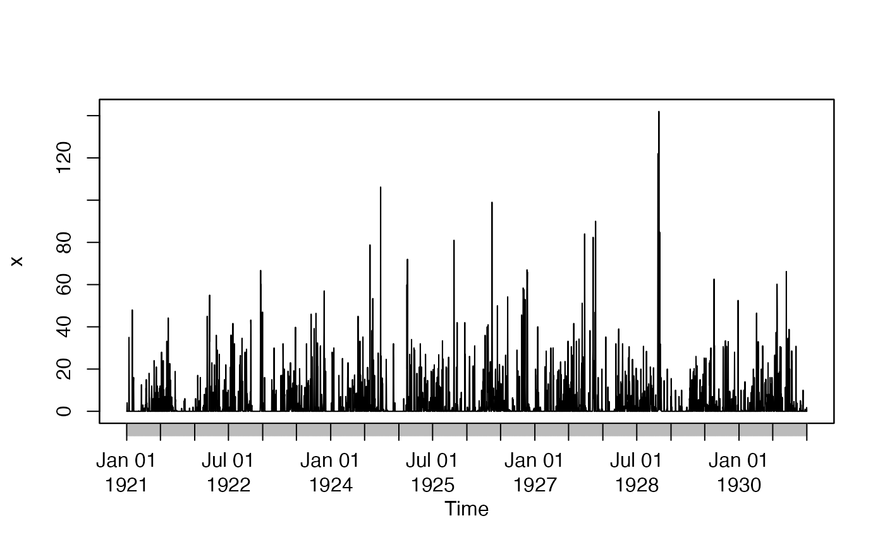

Customized Time Axis
drawxaxis.RdFor a nice time series plot, this function draws a customized time axis, with annual, monthly, daily and sub-daily time marks and labels.
Usage
drawxaxis(x, tick.tstep = "auto", lab.tstep = "auto",
lab.fmt=NULL, cex.axis=1, mgp=c(3, 2, 0), ...)Arguments
- x
time series that will be plotted using the X axis that will be draw class(x) must be ts or zoo
- tick.tstep
Character indicating the time step that have to be used for putting the ticks on the time axis. Valid values are: auto, years, quarters, months,weeks, days, hours, minutes, seconds.
- lab.tstep
Character indicating the time step that have to be used for putting the labels on the time axis. Valid values are: auto, years, quarters, months,weeks, days, hours, minutes, seconds.
- lab.fmt
Character indicating the format to be used for the label of the axis. See
formatinas.Date. If not specified (lab.fmt=NULL), it will try to use:
-) "%Y-%m-%d" whenlab.tstep=="days",
-) "%b-%Y" whenlab.tstep=="year"orlab.tstep=="month".- cex.axis
magnification of axis annotation relative to
cex(Seepar).- mgp
The margin line (in
mexunits) for the axis title, axis labels and axis line (Seepar). Default value ismgp = c(3, 2, 0).- ...
further arguments passed to the
axisfunction or from other methods.
Note
From version 0.3-0 it changed its name from drawxaxis to drawTimeAxis, in order to have a more intuitive name. The old drawxaxis function is deprecated, but still be kept for compatibility reasons.
Author
Mauricio Zambrano-Bigiarini, mzb.devel@gmail
Examples
## Loading the SanMartino precipitation data
data(SanMartinoPPts)
x <- window(SanMartinoPPts, end=as.Date("1930-12-31"))
## Plotting the daily ts only, and then automatic 'x' axis
plot(x, xaxt = "n", xlab="Time")
drawTimeAxis(x)

## Plotting the daily ts only, and then monthly ticks in the 'x' axis,
## with annual labels.
plot(x, xaxt = "n", xlab="Time")
drawTimeAxis(x, tick.tstep="months", lab.tstep="years")